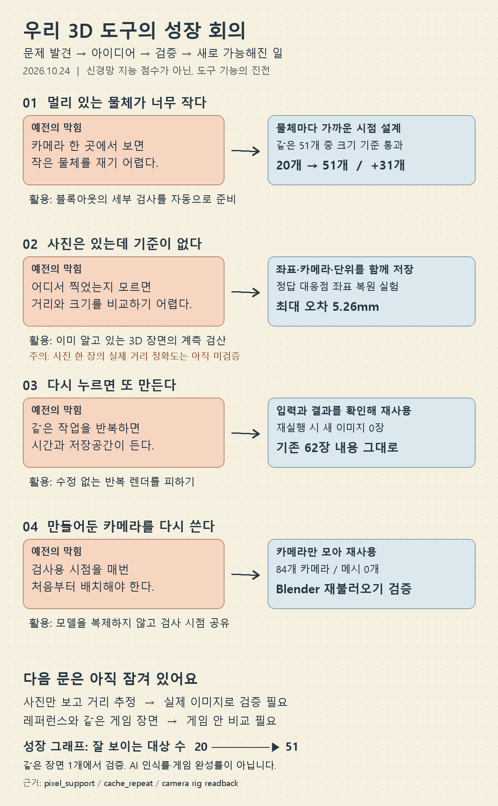

3D 도구 성장 아이디어 회의
못하던 일에서 시작해 해결 아이디어와 실제 검증 결과로 이어지는 회의 보드입니다. GPT 자체의 학습 점수가 아니라 로컬 제작 도구의 발전입니다.

숫자를 읽는 방법
51개는 같은 Blender 장면의 물체 수입니다. 크기 기준을 통과했다는 것은 계측에 필요한 작은 표면이 충분한 픽셀 크기로 보인다는 뜻이며, AI가 물체를 알아봤다는 뜻은 아닙니다.
5.26mm는 이미 알고 있는 3D 표면과 정답 대응점을 사용하는 좌표 복원 실험의 최대 오차입니다. 외부 사진에서 실제 거리를 맞히는 정확도는 아직 측정하지 않았습니다.
이번 회의의 결정
이 도구는 지금 블록아웃 검사와 카메라 준비에 활용합니다. 다음 실험은 정답 표면 정보를 주지 않은 실제 이미지 대응점 검증입니다. 그 결과가 좋아져야 사진 기반 공간 재현에 쓸 수 있습니다. 현재는 자동 사진→3D 복원, 레퍼런스 일치, Unreal·Luanti 동일 렌더링을 완료했다고 볼 수 없습니다.
근거: report_evidence.json, pixel_support.json, cache_repeat_evidence.json, 카메라 재불러오기 검증. 측정 범위: 사용자 장면 1개, 2026-10-24.